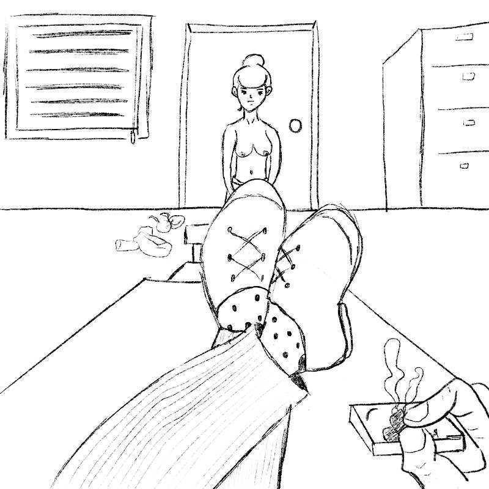

Creacover 2019 : J23
Publié le 05/02/2019 dans Dessin.
La musique du jour est The Mystic & the Master de Laura Stevenson.
À l’entendre comme ça, on se dit que c’est une belle chanson accoustique et que la chanteuse a une jolie voix. On croit même percevoir qu’il est question de jeune fille et de fleur. Dès qu’on se penche un peu sur les paroles, tout devient cauchemardesque. Le thème abordé est dérangeant et répugnant : exploitation, abus et maltraitance des femmes. Je n’étais déjà pas très motivée, mais alors là… Je regrette même d’avoir proposé ce titre.
Je préfère donc m’en tenir au croquis aujourd’hui. Inutile d’essayer de rentre beau quelque chose de laid.
